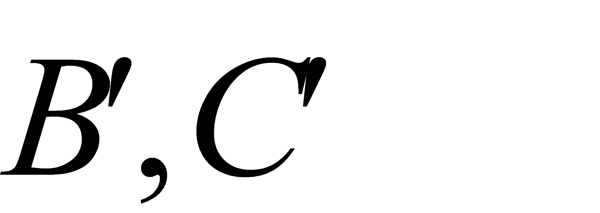
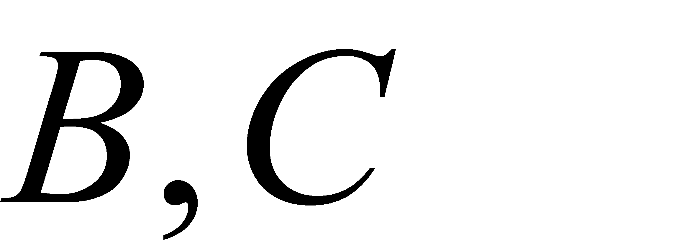
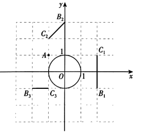
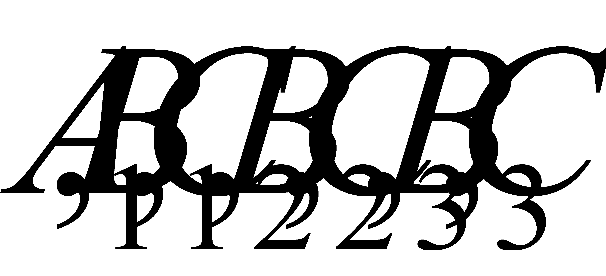
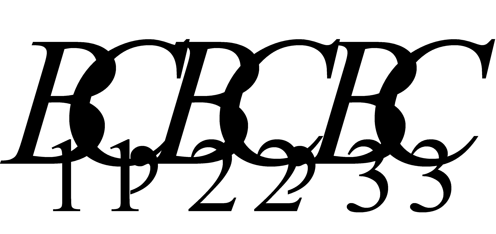
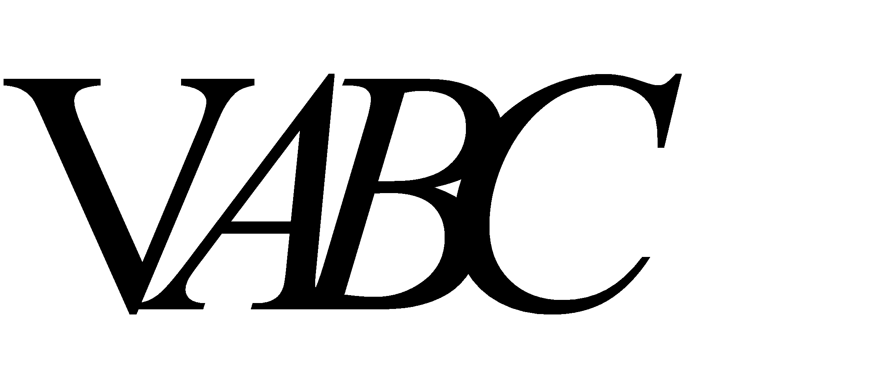
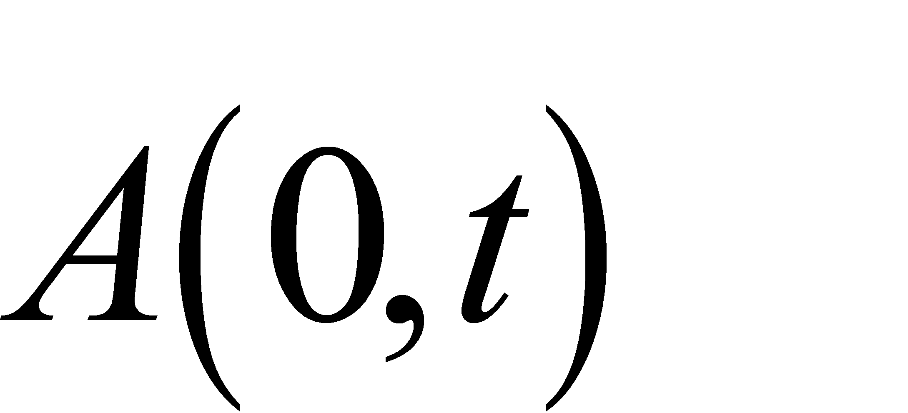
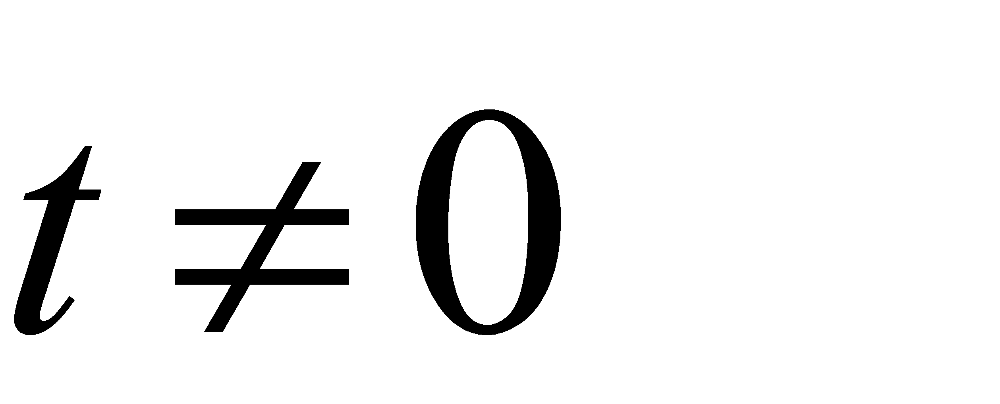
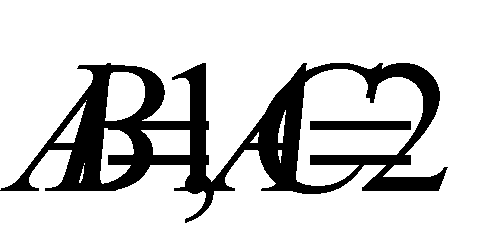

2021年北京市中考数学试题 · 数学解答题 第28题
28. 在平面直角坐标系 中，的半径为1，对于点和线段
中，的半径为1，对于点和线段 ，给出如下定义：若将线段绕点旋转可以得到的弦（
，给出如下定义：若将线段绕点旋转可以得到的弦（

分别是
的对应点），则称线段是的以点为中心的“关联线段”．
（1）如图，点

的横､纵坐标都是整数．在线段
中，的以点为中心的“关联线段”是______________；（2）

是边长为1的等边三角形，点
，其中
．若是的以点为中心的“关联线段”，求的值；（3）在中，

．若是 以点为中心的“关联线段”，直接写出的最小值和最大值，以及相应的长．
以点为中心的“关联线段”，直接写出的最小值和最大值，以及相应的长．